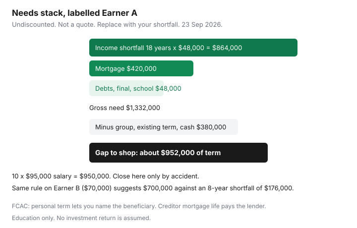

Insurance · Canada
How Much Life Insurance Do Canadian Households Need? A Needs Framework You Can Recalculate
A round number feels responsible. $250,000. $500,000. Ten times salary. None of those numbers knows your mortgage, your partner’s pay, the group certificate from work, or how many years your household would actually need income. Canadian families under-buy when they insure only the higher earner, and over-buy when a 10-times rule ignores a spouse who already covers most of the bills.
This worksheet uses after-tax needs and years, then adds debts and subtracts assets you would really spend. It does not assume an investment return, because a hopeful return is how worksheets shrink the insurance below the risk. Recalculate it when the facts change. You do not need an appointment to multiply.
Disclosure: Term life quote portals are an offer type. Saving Optimizer may earn a commission if we later add partner links. We do not currently claim insurer partnerships. We do not sell policies. The dollars below are a labelled household sketch, not a recommendation and not a premium. Education only, not insurance or tax advice.
Key takeaways
- Replace the after-tax shortfall for a set number of years. Do not start with 10 times gross salary.
- Add debts, final expenses, and education goals you still want funded. Subtract group life, existing personal insurance, and assets you would actually spend.
- Personal term usually beats creditor mortgage insurance on control: level benefit, beneficiary you name, premium that is not stuck to a shrinking balance.
- Insure each earner. The lower salary can still be the parent whose unpaid work, or whose group benefits, the household cannot replace.
- Redo the sheet after a promotion, a separation, a new child, or a mortgage renewal. Group life ends when the job ends.
Income replacement years × after-tax needs, not a blunt 10× salary rule
Gross salary is not the hole in the budget. Taxes, the survivor’s own pay, and expenses that die with you (a second commute, some childcare, the deceased’s personal spending) all change the shortfall. Pick a year count you can explain: years until the youngest is independent, or until the mortgage is gone, whichever matches how you would actually live. Then multiply.
Undiscounted on purpose. A present-value calculator makes the lump sum smaller if you assume the insurance proceeds earn a return. We do not assume a return. If you later choose to discount, write the rate down and stress it at zero. The conservative shopping number is the plain product: shortfall per year times years.
| Input | Earner A | Earner B |
|---|---|---|
| Gross salary | $95,000 | $70,000 |
| After-tax income the household still needs if this person dies | $48,000 a year | $22,000 a year |
| Years | 18 | 8 |
| Income need (shortfall times years) | $864,000 | $176,000 |
| Blunt 10 times gross salary | $950,000 | $700,000 |
Earner B’s 10-times number is hundreds of thousands above the shortfall because the other partner already earns most of what the household spends. Buying that extra face amount is a choice, not a formula. Earner A’s 10-times number is close only by accident. Change the years or the shortfall and it misses. Do the multiplication.

Add debts, final expenses, and education goals; subtract existing assets and group life
Income replacement is only the first block. Add amounts you would want paid off or funded. Subtract amounts that already exist and that the survivor would actually use. Do not subtract the emergency fund if the household still needs that fund the month after the funeral.
| Line | Labelled amount | Running total |
|---|---|---|
| Income need | $864,000 | $864,000 |
| Mortgage you would want cleared | $420,000 | $1,284,000 |
| Other consumer debt you would clear | $8,000 | $1,292,000 |
| Final expenses placeholder | $15,000 | $1,307,000 |
| Education top-up you still want | $25,000 | $1,332,000 |
| Minus group life on the certificate | −$100,000 | $1,232,000 |
| Minus existing personal term | −$250,000 | $982,000 |
| Minus liquid assets you would spend (not the emergency fund) | −$30,000 | $952,000 |
Shop a term face near $950,000 for this sketch, then re-quote if health or budget cannot carry it. Round to a figure an insurer will issue. Do not add CMHC or other mortgage default insurance into this sheet — that product protects the lender against default while you are alive. It is not a death benefit for your family. Housing guides cover mortgage structure; this page does not.
Group life is real and revocable. Write the certificate amount, the reduction at a stated age if there is one, and whether it continues if you leave. If the answer is no, do not subtract it for a plan you need after a job change. Subtract it only for the years you will still be employed, or buy personal term for the full gap and treat group life as a bonus.
Mortgage vs mortgage insurance: why personal term usually wins on control
FCAC’s optional-mortgage-insurance page draws the line clearly. Creditor mortgage life insurance pays the outstanding balance to the lender. The benefit shrinks as you pay the mortgage down. Premiums generally stay based on your age and the mortgage amount when you applied, so you can pay a similar premium for a smaller benefit later. The product is optional. A lender must not make it a condition of the mortgage, and must get express consent before providing it.
Personal term or permanent insurance, FCAC notes, may provide better value. You choose the face amount. It does not have to shrink. You name the beneficiary. They can pay the mortgage, or they can keep the mortgage and use the money for income, which sometimes is the better cash-flow choice if the rate is low and the survivor can carry the payment.
| Mortgage life (creditor) | Personal term | |
|---|---|---|
| Who is paid | The lender | The beneficiary you name |
| Benefit over time | Falls with the balance | Stays level during the term |
| Premium | Often stays level while the benefit shrinks | Set by age, health, and face amount; level if you bought level term |
| If you switch lenders | Often ends or must be rewritten | Stays yours |
| Underwriting | Sometimes lighter at signing, with conditions that surface at claim | Usually underwritten up front |
Post-claim underwriting is the quiet risk of enrolment at the mortgage appointment: the application looked easy, and eligibility is tested when someone dies. Personal term priced after medical questions is slower and, for many healthy applicants, the cleaner contract. Get both premiums in writing before you accept the lender’s offer. Term quote portals are an offer type, not a recommendation.
Two-earner households: cover each earner, not only the higher income
Insuring only Earner A leaves Earner B’s death as an unplanned budget. In the sketch, Earner B’s income need is smaller, not zero. Eight years at $22,000 is $176,000 before debts. Add any debt that is joint, subtract Earner B’s own group life, and buy a separate term policy on Earner B. A joint-first-to-die policy pays once. It can be cheaper and it can be the wrong shape if the second death is the one that removes childcare, benefits, or the remaining income.
- Run the worksheet twice, once for each death. The mortgage may appear in both, because either death might be the one that should clear it — do not double-count if you only need it cleared once and you are comfortable leaving it in one policy. Write down which policy is supposed to clear it.
- Include the loss of employer health and dental if the survivor would have to replace them with after-tax dollars. That is an annual cost inside the shortfall, not a second insurance slogan.
- Unpaid work counts. A parent whose salary is lower, or who is at home, can still be the person whose death creates childcare and household costs. Put those costs in the shortfall instead of insuring a salary that does not exist.
- Name contingent beneficiaries. Update them after separation. A worksheet that is right and a beneficiary form that is stale is a failed plan.
Revisit after promotion, divorce, new child, or mortgage renewal
The sheet expires when the facts expire. Calendar a redo beside the annual insurance review, and also on these events:
- Promotion or a cut in hours. The shortfall changed. So might group life, if it is a multiple of salary.
- New child. Years get longer. Education goals may appear. A term that ends at age 50 may now be short.
- Separation or divorce. Beneficiary, owner, and who pays the premium. A policy you do not own can be changed by the person who does. Ask a family lawyer before you treat insurance as a support substitute; this page is not that advice.
- Mortgage renewal. Balance is lower, which reduces the debt line. Payment might be higher, which increases the income shortfall. Recalculate both. Do not restart creditor insurance by default at the signing table.
- Job change. Group life may stop on the last day. Bridge with personal coverage before you give notice if the worksheet still shows a gap.
- Health change. You may not qualify for more later. That is an argument for buying the term you need while you can, and for knowing your conversion date — see term versus whole life.
Worksheet you can redo yearly without an advisor appointment
Copy this list into a note both adults can open. Fill it for each earner. The result is a face amount to take to quotes, not a policy.
- Annual after-tax dollars the household would still need if this person died. Be honest about the survivor’s pay.
- Times years you want that support to last.
- Plus mortgage balance you would want gone, other debts, a modest final-expense placeholder, and any education amount you refuse to drop.
- Minus group life that will still be in force, existing personal insurance, and liquid assets you would spend. Leave the emergency fund out of the subtraction if you still need it.
- The remainder is the gap. Quote level term to the year count, on that face amount, for each earner.
- If the premium does not fit, shorten the years or the education line on purpose. Do not silently switch to creditor mortgage insurance because the branch printed a form.
- Write the review month on the 45-day calendar. Next year, change only the lines that moved.
Assuris protection (greater of $1,000,000 or 90% of the death benefit at a member insurer, page used 23 Sep 2026) is a backstop if an insurer fails. It does not calculate how much you need. If the gap is above $1,000,000, read the 90% rule before you split policies solely out of failure fear — splitting can be reasonable, and it can be unnecessary cost. The product-choice page covers that distinction.
Sources & date stamps
- FCAC, Life insurance — term pays during a stated period and has no cash value (used 23 Sep 2026).
- FCAC, Optional mortgage insurance products — lender is beneficiary, benefit declines, premiums generally do not; personal insurance may be better value; coverage is optional (used 23 Sep 2026).
- Assuris, how am I protected — death benefit greater of $1,000,000 or 90% (used 23 Sep 2026).
Frequently asked questions
Is ten times salary the right amount of life insurance in Canada?
No. Multiply the after-tax income the household would still need by the years that support should last. Ten times gross salary ignores the survivor's pay, debts, and group life. In our labelled sketch it over-insures the lower earner by a wide margin.
What do we add and subtract?
Add the mortgage you would want cleared, other debts, a modest final-expense placeholder, and education money you refuse to drop. Subtract group life that will still be in force, existing personal insurance, and liquid assets you would actually spend. Leave the emergency fund in place if you still need it.
Is mortgage life insurance from the lender enough?
FCAC says it is optional, the lender is the beneficiary, and the benefit falls as the balance falls while premiums generally do not. Personal term lets you name the beneficiary and keep a level benefit. Compare both prices before you sign at the branch.
Should both earners be insured?
Yes, if either death creates a shortfall. Run the worksheet twice. A joint first-to-die policy pays only once. Unpaid childcare counts even when one salary is lower.
Is this insurance advice?
No. The dollars are a labelled sketch, not a face amount for your family. Quote portals are an offer type. We do not sell policies.